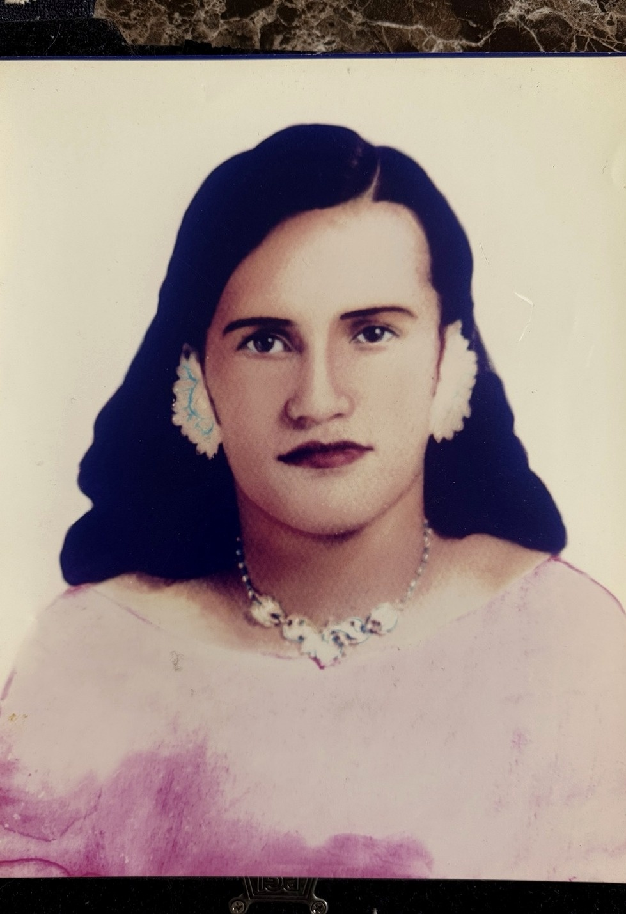
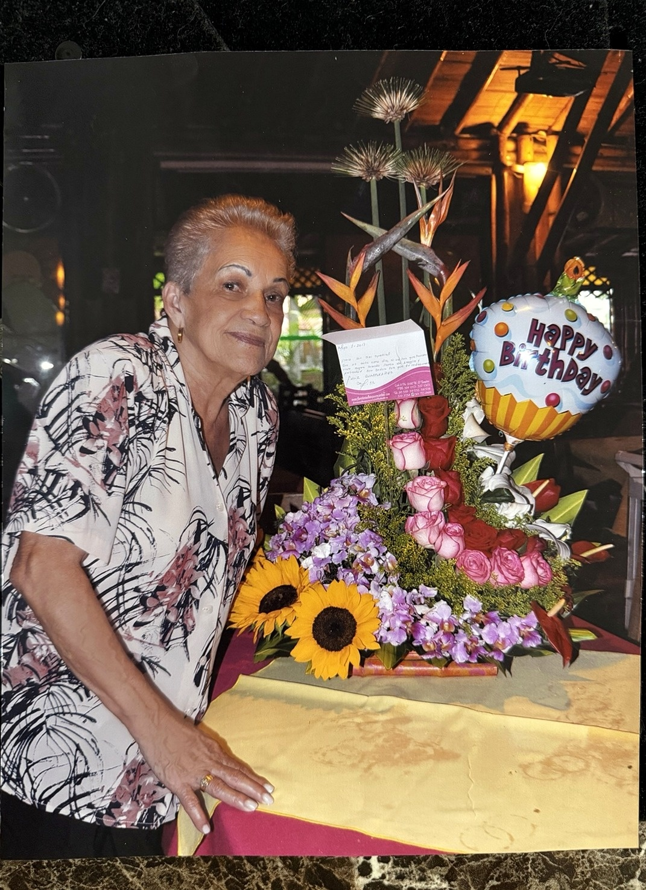
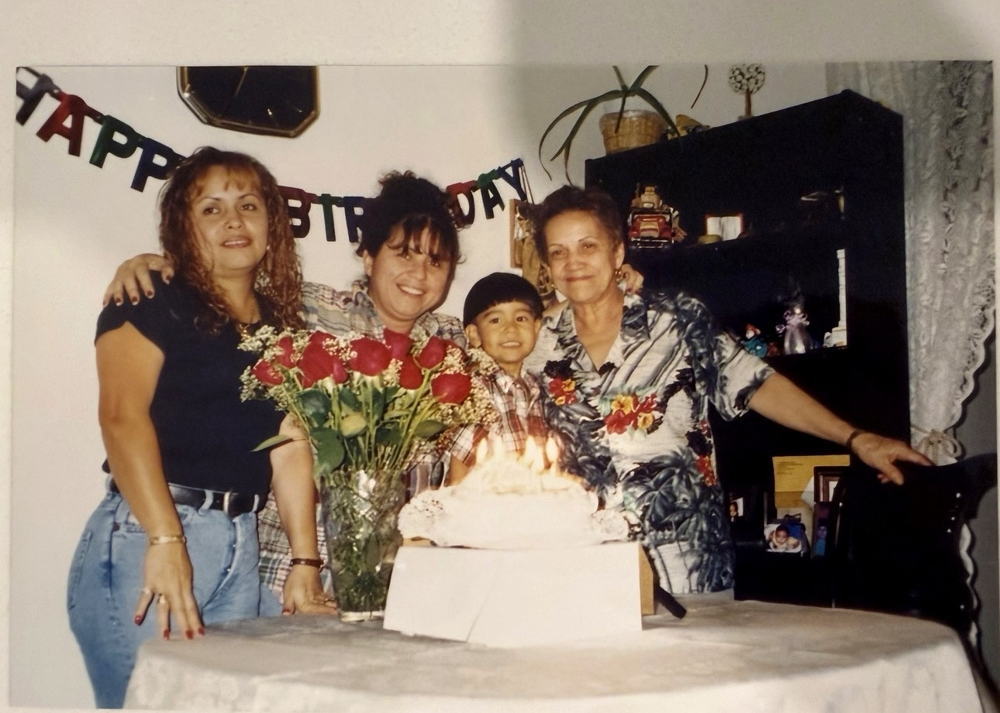
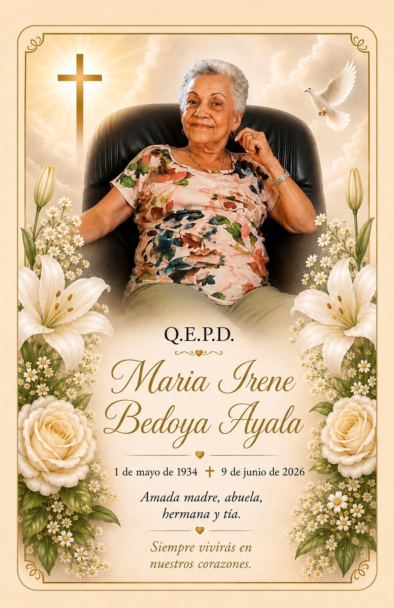
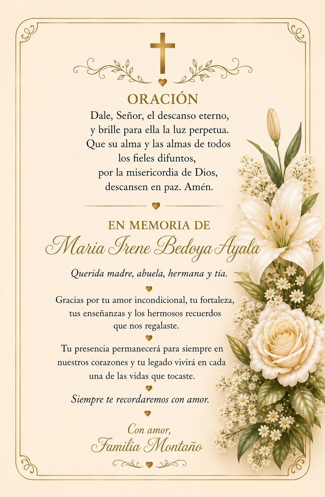

Marsella, Colombia
Aquí comenzó una vida que atravesaría países, generaciones y décadas.
Una vida recordada con amor
1 de Mayo de 1934 — 9 de Junio de 2026
Amada madre, abuela, hermana y amiga. Siempre vivirás en nuestros corazones.
Conocer su historia ↓
Su historia
Dedico esta página a la mujer que superó todo lo imaginable para salir adelante. Mi abuela fue una mujer ejemplar de fortaleza, de orgullo y, más que todo, de amor y cariño. Todo lo que le echó la vida, mi mamita lo enfrentó sin miedo.
Nació el primero de Mayo de 1934 en Marsella, Colombia. Durante su niñez recogía algodón a mano junto a su madre, quien también la crió sola. Estudió hasta la escuela primaria, tuvo a su primer hijo a los 14 años y a su quinta y última hija a los 26.
Después de criar a sus hijos casi sola, emprendió otra vida. Llegó a Nueva York en los años setenta, después de los 40, y volvió a construir desde cero. Su historia no fue sencilla; por eso su familia recuerda no solo lo que logró, sino la fuerza con la que lo hizo.

A través de los años
Aquí comenzó una vida que atravesaría países, generaciones y décadas.
Criar, trabajar, resistir y seguir. La familia siempre al centro.
Llegó después de los 40 y comenzó de nuevo, con la misma determinación que definió su vida.
Cumpleaños, escuela, paseos y días comunes: la vida familiar se construyó a su alrededor.
Los años siguieron llenándose de personas, viajes y recuerdos compartidos.
Su presencia terminó; su influencia no.
Mi Mamita y Yo
Mamita te lo debo todo. Mi vida aquí solo es posible por ti. Años de cumpleaños que solo éramos tú y yo, años que me caminabas para la escuela, y puntualmente me recogías. Todos los desayunos, almuerzos y cenas que cocinaste para nosotros, y yo nunca dejé una harina en el plato. Nunca por un segundo sentí que me hacía falta algo porque tú diste todo el amor y apoyo que un niño necesitaba. Años pasaban, y lentamente pasamos de tú cuidarme a mí, a yo cuidarte a ti con la gran ayuda de mi hermosa tía. No hay palabras por lo agradecido y orgulloso que estoy por todo lo que lograste solita.
Familia, amigos y alegrías
Eran muchos los sacrificios que hiciste por tu familia y amigos, eso nunca se va a olvidar. Eras y siempre vas a ser una mujer de ejemplo.
Niño
Tú y Niño siempre estaban juntos, y juntos también envejecieron. Nos queda la esperanza de que ahora estén en el cielo, cuidándonos como siempre.
Su legado

Gracias por tu amor incondicional, tu fortaleza, tus enseñanzas y los hermosos recuerdos que nos regalaste. Tu presencia permanecerá para siempre en nuestros corazones y tu legado vivirá en cada una de las vidas que tocaste.
— Familia Montaño
En memoria


Dale, Señor, el descanso eterno, y brille para ella la luz perpetua.
1934 — 2026
Siempre te recordaremos con amor.